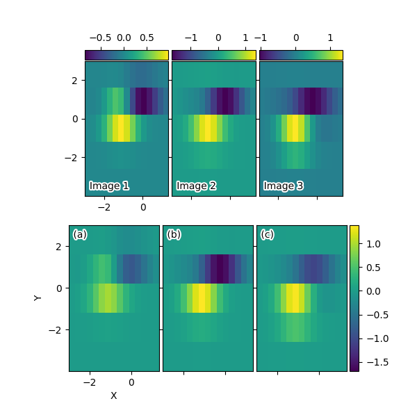

Note
Click here to download the full example code
Demo Axes Grid2¶
Grid of images with shared xaxis and yaxis.
import numpy as np
from matplotlib import cbook
import matplotlib.colors
import matplotlib.pyplot as plt
from mpl_toolkits.axes_grid1 import ImageGrid
plt.rcParams["mpl_toolkits.legacy_colorbar"] = False
def add_inner_title(ax, title, loc, **kwargs):
from matplotlib.offsetbox import AnchoredText
from matplotlib.patheffects import withStroke
prop = dict(path_effects=[withStroke(foreground='w', linewidth=3)],
size=plt.rcParams['legend.fontsize'])
at = AnchoredText(title, loc=loc, prop=prop,
pad=0., borderpad=0.5,
frameon=False, **kwargs)
ax.add_artist(at)
return at
fig = plt.figure(figsize=(6, 6))
# Prepare images
Z = cbook.get_sample_data("axes_grid/bivariate_normal.npy", np_load=True)
extent = (-3, 4, -4, 3)
ZS = [Z[i::3, :] for i in range(3)]
extent = extent[0], extent[1]/3., extent[2], extent[3]
# *** Demo 1: colorbar at each axes ***
grid = ImageGrid(fig, 211, # similar to subplot(211)
nrows_ncols=(1, 3),
axes_pad=0.05,
label_mode="1",
share_all=True,
cbar_location="top",
cbar_mode="each",
cbar_size="7%",
cbar_pad="1%",
)
for i, (ax, z) in enumerate(zip(grid, ZS)):
im = ax.imshow(z, origin="lower", extent=extent)
cb = ax.cax.colorbar(im)
# Changing the colorbar ticks
if i in [1, 2]:
cb.set_ticks([-1, 0, 1])
for ax, im_title in zip(grid, ["Image 1", "Image 2", "Image 3"]):
t = add_inner_title(ax, im_title, loc='lower left')
t.patch.set_alpha(0.5)
for ax, z in zip(grid, ZS):
ax.cax.toggle_label(True)
#axis = ax.cax.axis[ax.cax.orientation]
#axis.label.set_text("counts s$^{-1}$")
#axis.label.set_size(10)
#axis.major_ticklabels.set_size(6)
grid[0].set_xticks([-2, 0])
grid[0].set_yticks([-2, 0, 2])
# *** Demo 2: shared colorbar ***
grid2 = ImageGrid(fig, 212,
nrows_ncols=(1, 3),
axes_pad=0.05,
label_mode="1",
share_all=True,
cbar_location="right",
cbar_mode="single",
cbar_size="10%",
cbar_pad=0.05,
)
grid2[0].set_xlabel("X")
grid2[0].set_ylabel("Y")
vmax, vmin = np.max(ZS), np.min(ZS)
norm = matplotlib.colors.Normalize(vmax=vmax, vmin=vmin)
for ax, z in zip(grid2, ZS):
im = ax.imshow(z, norm=norm, origin="lower", extent=extent)
# With cbar_mode="single", cax attribute of all axes are identical.
ax.cax.colorbar(im)
ax.cax.toggle_label(True)
for ax, im_title in zip(grid2, ["(a)", "(b)", "(c)"]):
t = add_inner_title(ax, im_title, loc='upper left')
t.patch.set_ec("none")
t.patch.set_alpha(0.5)
grid2[0].set_xticks([-2, 0])
grid2[0].set_yticks([-2, 0, 2])
plt.show()
Keywords: matplotlib code example, codex, python plot, pyplot Gallery generated by Sphinx-Gallery